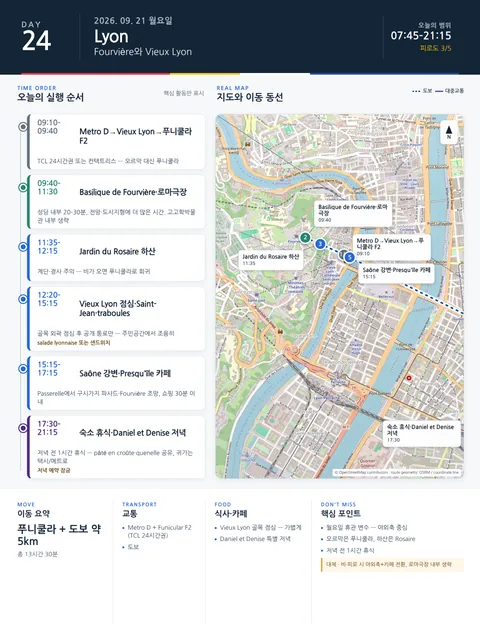

Day 24 · 9/21 월 · Lyon

오늘의 주요 장소
- 핵심 실행
- Fourvière·Vieux Lyon
- 권장 출발
- 09:00 전후
- 완충
- 경사·하산 후 60분 휴식
- 예약
- 이 날짜로 잡힌 예약 없음 · 현황
시간표
| 시간 | 일정 | 실행 포인트 |
|---|---|---|
| 07:45–08:45 | 숙소 아침·준비 | 이날은 오르막 대신 푸니쿨라를 사용하므로 정식 운동 생략 |
| 09:10–09:40 | Metro D → Vieux Lyon → Funicular F2 | TCL 24시간권 또는 컨택트리스 이용 |
| 09:40–10:40 | Basilique de Fourvière·전망대 | 성당 내부 20–30분, 전망과 도시지형 설명에 더 많은 시간 |
| 10:45–11:30 | 로마극장 외부와 언덕산책 선택 | 고고학박물관 내부는 생략. 극장·도시기원만 확인 |
| 11:35–12:15 | Jardin du Rosaire 하산 | 계단과 경사 주의. 비가 오면 푸니쿨라로 되돌아감 |
| 12:20–13:10 | Vieux Lyon 가벼운 점심 | salade lyonnaise 또는 샌드위치. 관광지 메인광장보다 골목 외곽 선택 |
| 13:15–15:15 | Saint-Jean·traboules 자율산책 | 공개된 통로만 이용하고 주민공간에서 조용히 이동 |
| 15:15–16:00 | Saône 강변·Passerelle du Palais de Justice | 구시가지 파사드와 Fourvière를 강 건너에서 조망 |
| 16:00–17:15 | Presqu’île 카페·자유 | 피로하면 숙소 귀환. 쇼핑은 Rue de la République 30분 이내 |
| 17:30–18:45 | 숙소 휴식 | 저녁 전 최소 1시간 휴식 |
| 19:30–21:15 | Daniel et Denise 특별 저녁 | pâté en croûte, quenelle de brochet sauce Nantua, tarte praline 중 공유 |
| 21:15 이후 | 택시 또는 메트로 귀가 | 휴대전화·지갑을 지퍼가방 안쪽에 넣는다 |
피로도
4/5
이 날의 장소
일자별 시간표와 본문 표기에서 찾은 것이다. 하루의 전부가 아니라 장소 카드가 있는 것만 담는다.
이 날의 메모
Fourvière·Vieux Lyon·traboules — 도시의 2,000년을 아래로 걸어 내려오기
Fourvière 전망대에서 내려다본 Presqu’île와 두 강
- 설명: Saône과 Rhône, Presqu’île, Part-Dieu 고층부가 한눈에 보여 리옹의 도시구조를 설명하는 대표 이미지.
Vieux Lyon 르네상스 안뜰과 traboule
- 설명: 거리에서 안뜰과 다른 골목으로 이어지는 반공공 통로의 공간구조를 보여주는 이미지.
예상 보행 8–10km, 하산 계단 포함.
오늘의 필수·선택
- 필수: Fourvière 전망, Vieux Lyon, traboule 2–4개
- 우선 추천: Jardin du Rosaire 하산, Saône 강변
- 선택: 로마극장, Saint-Jean 성당 내부
- 대체: 비가 오면 Fourvière→푸니쿨라 하산→Musée Gadagne 또는 Musée des Beaux-Arts 중 1곳
꼭 해볼 것
- Fourvière에서 Rhône과 Saône, Presqu’île, Part-Dieu의 위치를 직접 비교하기
- traboule을 “비밀통로 수집”이 아니라 상업도시와 주거건축의 구조로 이해하기
- Vieux Lyon에서 휴대전화로 지도를 계속 보며 걷지 말고, 안전한 광장에서 동선을 확인한 뒤 이동하기
상세 실행 확인
- 최고 리스크
- 월요일 휴관·경사·보행
- 우선 삭제
- 로마극장 내부
- 대체안
- 야외축+카페
- 식사·휴식
- Vieux Lyon 점심
- 잠금 필요
- 푸니쿨라·저녁
Google 실행지도
Fourvière와 Vieux Lyon — 푸니쿨라 언덕
지도 펼치기
지도는 펼칠 때만 불러옵니다.
Daily Action Map

실제 좌표와 OpenStreetMap을 사용한 실행용 요약입니다. 도로·대중교통 상황은 출발 직전에 다시 확인하세요.